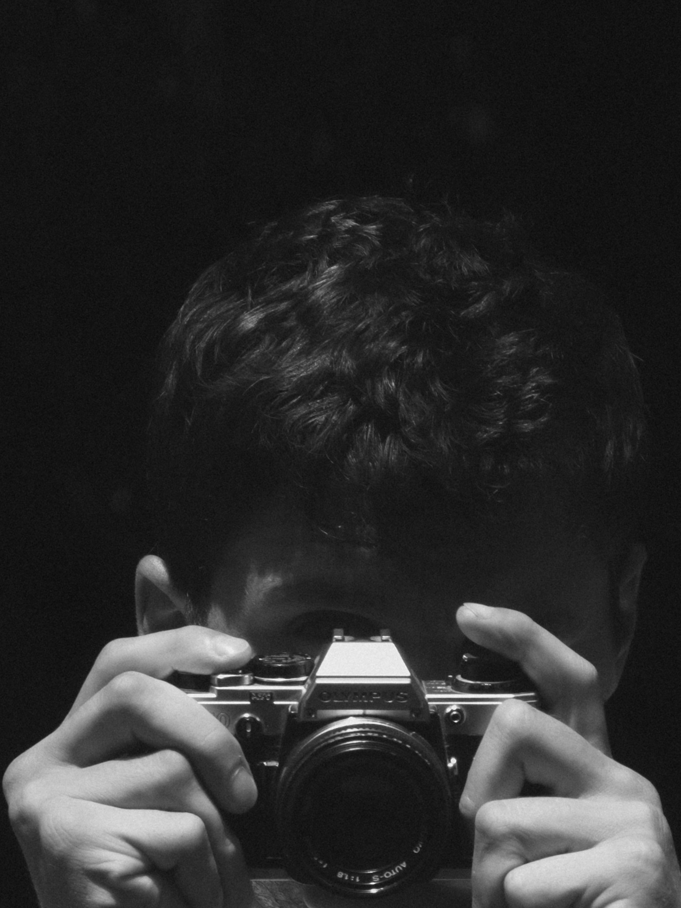

Raised by the raw landscapes of the Atlantic coast and the Pyrenees, I'm deeply inspired by the natural world and its constant oscillation between relentless movement and the seemingly still. I make images that aim to capture this timelessness.
There is always beauty in the moment and it's often enough.
I've spent years in front of the lens while learning to get behind it. It taught me what it feels like to sometimes be reduced to an image but also this great sensation of witnessing myself being seen through the lens of the photographer I shot with. I strive to photograph people differently because of it, more than documentary photography, I look to capture a feeling, a texture, something that stays.
There is beauty in patina, in what time leaves behind.
I think this is what I'm constantly looking for.
let's work together